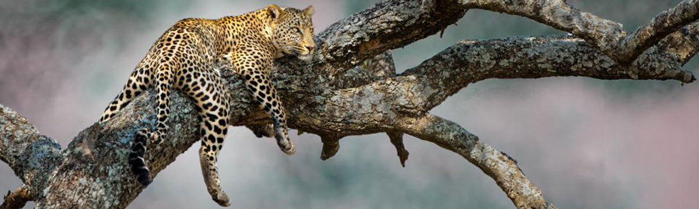

Un peut de culture : le Sahara
Ce grand désert est le plus vaste et le seul vrai désert au sens géographique du terme car il comporte des régions hyperarides (moins de 50 mm de précipitations annuelles mais avec une extrême irrégularité interannuelle). Il couvre plus de 8,5 millions de km21 (soit près de 30 % de la surface du continent africain), ce qui en fait la plus grande étendue de terre aride d'un seul tenant dans le monde. Nous pouvons aisément imaginer qu’un dans un tel context il est rare d’y croiser quelqu’un. Cepdnant certaine aglomérations y ont vue le jour.
Au beau milieu de nul part
L’idée était la suivante : je devais partir de l’Algérie et traversé le désert en faisant des actes dans les plus beaux lieux qui m’étaient possible d’arpenté ainsi, j’avais déjà prévu ma Roadmap, préparée mon matos pour la survie, en restant au strict minimum. Et j’avais des points relais où mon équipe m’attendait pour faire le point sur mes conditions de santé. Je partais donc du sud de l’Algérie et je devais passer par Ain sallah qui serait mon entrée dans les portes du désert. Ensuite, j’allais traverser le Niger dans toute sa diagonal pour terminer dans un coin de verdure au Tchad avec un arrêt final dans le Parc national du Bamingui-Bangoran. Je m’étais préparé à tout. Sauf peut-être une chose :
Bamigui Bangoran


Les tempêtes de sable
Voilà où débute mon histoire. Au plein milieu du désert à 1 semaine de marche du Parc National de Tassili N'Ajjer où j’étais resté ébahi devant les plus vieux pétroglyphes du monde où les conditions avait été plus que clémente malgré la chaleur et la sècheresse. Je me dirigeais donc vers mon prochain check-point qui se trouvait 3 200 km vers le sud-sud-ouest à In Gall.
Au beau milieu de la nuit, comme à mon habitude, j'eus creusé mon trou à un peu prêt 1 mètre de profondeur pour me couvrir du froid qui s’empare de l’immensité de cet océan de dune. Je décide alors de m’assoupir un peu pour préserver mes forces pendant la traversée. J’avais ainsi, disposé un peu plus loin, mon matos qui était marqué par un bâton pour m’assurer de les retrouver le matin.
Mais quelques heures après avoir fermé difficilement l’œil, une atmosphère étrange se fit ressentir. Je ne pourrais pas vous expliquer avec précision ce sentiment qui précède une tempête. Peut être l’avez,-vous êtes déjà ressenti... C’est comme si l’atmosphère était chargée et que le temps était en apesanteur. Je dirais même que l’audeur du sable elle-même témoigné du danger qui s’apprêter à me frapper. Cette nuit si, c’était la nouvelle lune, ce qui ne favorisait pas ma visibilité. Cependant, je remarqua très vîtes que quelques choses clochées dans le ciel. En effet, alors que le cile étoilé était parfaitement dégagées, à peu près au premier tiers de l’horizon, les étoiles étaient totalement absentes, comme si elles avaient été gommées du ciel à partir d’une ligne fendant le ciel. Mais il me fallut que quelques secondes pour discerner ce qui finalement était une massive falaise sombre ! Un énorme bloc de sable de la taille d’un glacier avancé à toute allure vers moi. Vous n’imaginez même pas à quelle rapidité je me suis fait surprendre par cette tempête. D’un moment à l’autre, je me suis retrouvé dans le chaos le plus total ! Les grains de sable fouétaient mon visage avec une force telle que la douleur était vive et intégrale. Lorsque l’on se retrouve totallement imergé, les particules sont tellement fines et denses, qu’elle s’émîssent partout, nous rendant aveugle et suffoquant. Très vite, je me couvre la bouche et le nez pour m’assurer de pouvoirs respirés. Je ne vois plus à 60 cm de moi et le sable se pose à une vitesse fulgurante. Je ne peux plus m’attarder. Pour m’assurer de survivre, je ne peux plus rester là. ! L’importance numéro 1, et de retrouver mes affaires. Et déjà, mon bâton devant me servir de repère est à peine perceptible. Il faut absolument que je retrouve tout mon matériel. Cependant, un sac manque à l’appel. C’était malheureusement celui qui m’aurait été le plus utile, à savoir celui avec ma balise GPS et mon materiel de navigation. Je décide finalement, d’abandonner la recherche ayant récupéré les vivres et le materiel de première nécessite. Le truc lors d’une tempête de sable, c’est de ne jamais s’arrêter, celle-ci était tellement violente que s’arrêter pour dormir serait du suicide. J’ai dû donc me mettre à marcher, ne jamais resté sur place.
13H de tempete en continue
J’ai dû donc marcher pendant 13 heures consécutives pour m’assurer de survivre face à cette situation. Je ne pressentais que la suite allée être extrêmement difficile. Dans un tel environnement, nous perdons tous nos repères. Mangé, boire, uriné deviens difficile, mon jerrican d’eau m’étais extrêmement précieux et je ne pouvais pas me permettre de l’ensabler. J’eus d’ailleurs commencé à économiser se liquide si précieux en récupérant mon urine en cas de problème aggravé. Ma seule possibilité, de me retrouver au check-point à temps était de suivre les étoiles. Ce fut effectivement hyper important et j’eus 3 jours de retard sur le cursus prévu à l’origine.
Finalement, tout ce fini bien, bien que les collègues ont eu une panique intense durant 3 jours. S’étant iniquité, il avait suivi la trace du GPS en espérant me retrouver et s’était iniquité de retrouvé une partie du matos abandonné. J’ai pu cependant les rassurer arrivé dans un petit bled ou il y avait un phone service. ��A suivre...